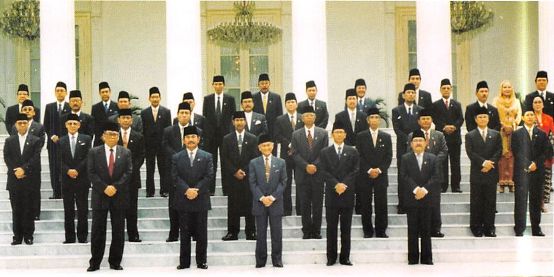
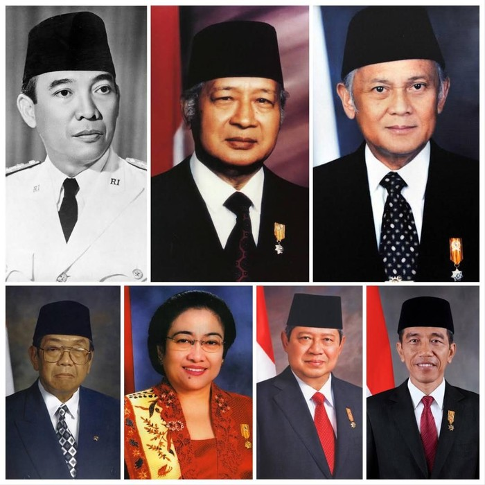

Reformasi adalah penataan kembali bidang-bidang kehidupan dalam suatu negara atau masyarakat melalui perubahan nilai-nilai yang mendasari tata aturan dalam suatu pemerintahan. Krisis-krisis ekonomi, hukum, dan politik yang terjadi menimbulkan krisis kepercayaan masyarakat terhadap pemerintah sehingga menimbulkan gerak reformasi.
Sejak pengunduran Presiden Soeharto pada 21 Mei 1998, maka lahirlah era reformasi yang diharapkan mampu menyelamatkan bangsa dari jurang kemiskinan, keterpurukan harga diri bangsa, dan krisis kehancuran. Pada tanggal itu juga, B.J. Habibie dilantik menjadi Presiden RI ke-3. Ia segera membentuk Kabinet Reformasi Pembangunan untuk menyelesaikan tugas-tugas reformasi.

Kabinet Reformasi Pembangunan (wikipedia.org)
Pada 10-13 November 1998, terjadinya SI MPR yang menghasilkan 12 ketetapan MPR. Berdasarkan keputusan MPR, tujuan reformasi pembangunan adalah:
- Mengatasi krisis ekonomi dalam waktu sesingkat-singkatnya, terutama untuk menghasilkan stabilitas moneter yang tanggap terhadap pengaruh global dan pemulihan aktivitas usaha nasional.
- Mewujudkan kedaulatan rakyat dalam seluruh sendi kehidupan bermasyarakat, berbangsa, dan bernegara melalui peningkatan partisipas politik rakyat.
- Menegakkan hukum berdasarkan nilai-nilai kebenaran dan keadilan, hak asasi manusia menuju terciptanya ketertiban umum dan perbaikan sikap mental.
- Melaksanakan agenda reformasi pembangunan agama dan sosial budaya dalam usaha mewujudkan masyarakat madani.
Adapun skala prioritas pelaksanaan reformasi pembangunan adalah:
- Bidang ekonomi, antara lain:
- Membenahi lembaga-lembaga keuangan, terutama sektor perbankan.
- Meningkatkan keterbukaan pemerintah dalam pengelolaan usaha untuk menghilangkan KKN dan praktek-praktek lainnya yang merugikan negara.
- Bidang politik, antara lain:
- Menegakkan kedaulatan rakyat dengan memberdayakan peran pengawasan oleh lembaga negara dan kemasyarakatan.
- Pembagian kekuasaan secara tegas wewenang antara eksekutif, legislatif, dan yudikatif.
- Bidang hukum, antara lain:
- Menegakkan supremasi hukum dalam kehidupan bermasyarakat, berbangsa, dan bernegara.
- Terbentuknya sikap dan perilaku anggota masyarakat termasuk para penyelenggara negara yang menjunjung tinggi hukum yang berlaku.
- Bidang sosial-budaya, antara lain:
- Pembinaan kerukunan serta pembentukan dan pemberdayaan jaringan kerja antar umat beragama.
- Meningkatkan pembangunan akhlak mulia dan moral luhur masyarakat melalui pendidikan agama sungguh-sungguh untuk mencegah kegiatan yang mendorong akhlak tidak terpuji dalam masyarakat atau melalui media sosial.
Agenda reformasi cukup berat untuk diwujudkan. Di dalam usahanya, B.J. Habibie menghadapi bermacam tantangan seperti kecaman, kritik, rongrongan, dan untuk mempertahankan persatuan negara. Posisi B.J. Habibie sebagai presiden kemudian diganti oleh Abdurrahman Wahid, Megawati Soekarnoputri, Susilo Bambang Yudhoyono, dan Joko Widodo.

Presiden Indonesia dari masa ke masa (detik.com)
Masa reformasi adalah era keterbukaan untuk menyampaikan pendapat perkembangan ekonomi maupun kritik terhadap kinerja aparatur negara. Pada awal masa ini, terjadinya aksi unjuk rasa di mana-mana oleh berbagai pihak. Banyaknya aksi ini memunculkan beberapa kekhawatiran bahwa sebagian dari aksi unjuk rasa hanya mengemban kepentingan suatu golongan.
Meskipun demikian, reformasi memberikan peluang besar untuk memberikan tanggapan kepada kebijakan pemerintah. Dengan reformasi, sudah tidak ada lagi sistem yang mengekang kebebasan berpendapat maupun berorganisasi. |